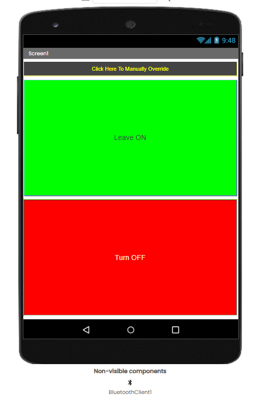
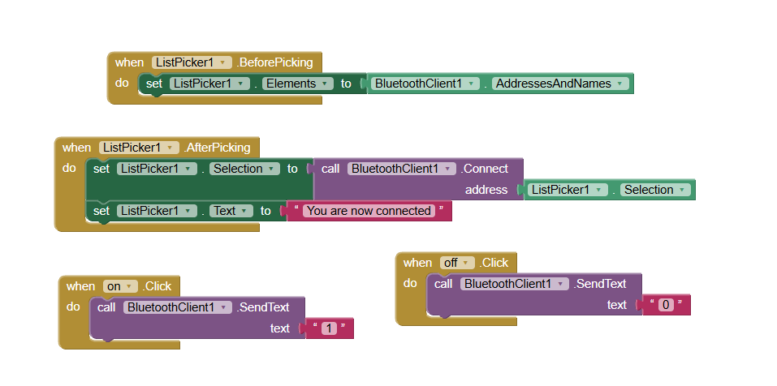
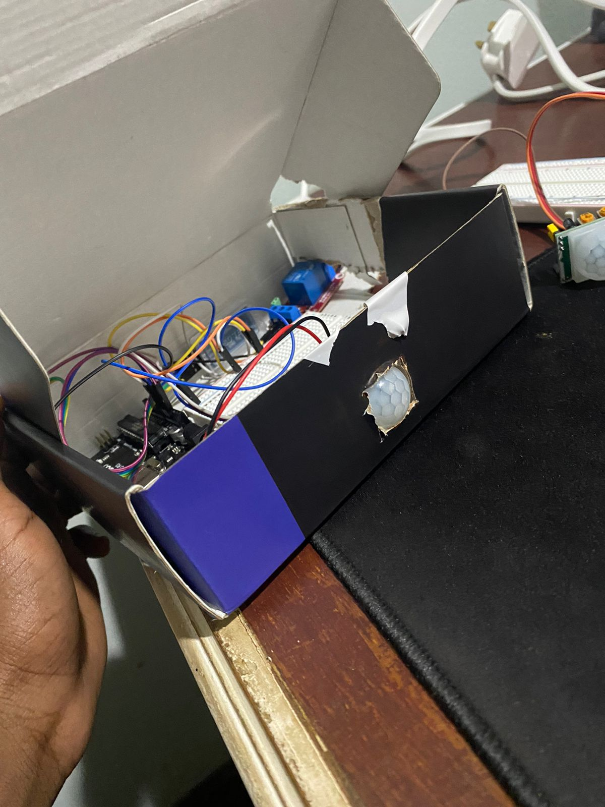

In my final year of college, a friend and I decided to build our own motion sensor light using an Arduino. What began as a fairly simple assignment eventually became a homemade smart light we could control from an Android app—and now, a working 3D browser simulation you can wire and test yourself.
This entire story took place in early 2023, so a few of the finer details are naturally a little vague now. It was also before the current surge of everyday generative AI tools. With what is available today, I am sure someone tackling a project like this could use AI to move ten times faster—understand components, diagnose problems, and iterate without spending quite as many nights lost between forum posts and YouTube videos.
At the time, neither of us knew much about electronics. But that was part of the fun.
This is the story of how we built it, the countless hours spent figuring out why things weren’t working, and why this particular project had such an impact on me. If you’re a student looking for a project idea—or just someone interested in building things—I hope it gives you a little inspiration to try something yourself.
Just interested in building one? Skip to the build guide ↓It started with a college assignment
It was my final year at Sir Arthur Lewis Community College, and we needed to complete a final assignment for our technical project. I paired up with my friend, Sacchin Cepal, and we spent countless hours brainstorming ideas that would woo our lecturers.
Most of our classmates were working on websites or relatively simple dashboards. We wanted something different: something practical and hands-on, something that would challenge us and, more importantly, allow us to learn immensely in the process.
Around that time, I had developed a bit of an infatuation with automation and building engineering solutions at home. I’m talking Arduino Unos, Raspberry Pis, servo motors, sensors, relays, stepper motors, and all the other little components you could somehow combine to make something interesting.
That fascination came largely from watching creators like Michael Reeves and I Did a Thing. Sometimes the projects were incredibly practical. Other times, they were completely ridiculous. That was what made them interesting.
I knew very little about how any of it actually worked, but I was fascinated by what was possible. Sacchin and I initially played around with the idea of an automated locking system. Eventually, though, we settled on a homemade motion sensor light.
Little did I know how much fun it would be.
Building our first Arduino motion sensor light
There was just one problem: we both had very limited knowledge of electronics or how to use most of these components. I knew what was possible with an Arduino, but actually making everything work was a completely different story.
So, naturally, we turned to YouTube. We spent hours jumping from one video to another, one website to the next, trying to understand circuit diagrams, wiring, sensors, relays, and how all these different components worked together.
Watch the original Arduino PIR motion-sensor light tutorial on YouTube ↗. It became the foundation of our first build; our main addition came later when we introduced Bluetooth and an Android app. Credit belongs to the original creator.
The concept itself was fairly straightforward. A PIR—passive infrared—motion sensor would detect changes in infrared radiation associated with movement and send a signal to the Arduino. The Arduino would then control a relay, which acted as an electrically operated switch for the light.
At least, that was the idea.
I remember one of our earliest challenges was simply getting the relay to click when motion was detected. It sounded simple enough. Connect the components, upload the code, wave your hand in front of the sensor, and voilà.
Except, nothing happened.
So back to researching we went—checking connections, reading the code, and trying to understand what we were doing wrong. That became a common theme throughout the project. Something wouldn’t work, we’d spend hours trying to figure out why, and eventually we’d get somewhere. Then, just when we thought we had figured everything out, we’d find another way to make it more complicated.
We also learned how to adjust the two tiny controls on the PIR sensor: one for sensitivity and another for how long its output remained active after detecting movement. It involved a lot of testing, turning the knobs slightly, waving our hands in front of the sensor, and waiting to see what happened.
Eventually, we got our motion sensor light working. Seeing something we had built actually respond to movement was pretty satisfying.
We were done. Or so we thought.
From motion sensor light to smart light
The motion sensor light worked, but it just wasn’t enough. We wanted something more—something that would challenge us even further. That was when I decided we should incorporate an app to control the light.
I mean, how hard could it be?
That decision prompted many more hours of searching. We started learning about Bluetooth modules and how they could allow an Arduino to communicate with another device. Eventually, we settled on an HC-06 Bluetooth serial module.
The idea was simple. We wanted the light to operate automatically when motion was detected, but also wanted the ability to manually override it from a phone: turn it on, turn it off, and return control to the motion sensor when Bluetooth disconnected.
Building the Android app with MIT App Inventor
This was probably the most interesting part of the entire project. As a teenager who had only recently gotten into programming, automation, and building things in real life, MIT App Inventor seemed like the right option.
App Inventor lets you create Android applications with a visual, block-based programming system. Instead of writing every line yourself, you design an interface and connect blocks that determine how it behaves. Sounds simple enough, right?
For us, it became one of the most difficult parts of the project.
Our app was basic. It had a selector for paired Bluetooth devices and two buttons to control the light. One was labelled Leave ON; the other was Turn OFF. Behind the scenes, Leave ON sent the text 1, while Turn OFF sent 0. The Arduino then interpreted the command and controlled the output.


1 for ON or 0 for OFF.Simple in theory. Getting the software and hardware to communicate was an entirely different challenge.
The hardest part: making everything work together
We had to learn the Arduino IDE, upload code to the board, and test whether it did what we expected. There were plenty of failed attempts. We would change the code, upload it again, test the light, adjust the app, and repeat.
Sometimes it worked. Other times, absolutely nothing.
When something failed, we had to isolate the cause. Was the sensor detecting motion? Was the Arduino receiving the signal? Was the Bluetooth module connected? Was the app sending the right command?
Looking back, this was the hardest part of the project by far—but also the most important. It forced me to understand how different technologies communicate, how to troubleshoot, and how to research something until I could actually make sense of it.
Eventually, the app worked with the light. We could control a physical device from an application we had built ourselves. And that was pretty cool.
The finished project
What started as a simple motion sensor light had become something more interesting. We had built a prototype around an Arduino Uno, a PIR motion sensor, a relay, and an HC-06 Bluetooth module. The Arduino handled the sensor and control logic while the Android app sent manual commands.
We even built an enclosure—which is a generous way of saying we repurposed an old cardboard box, added tape, and cut a slightly enthusiastic hole for the PIR sensor. It had all the visual polish of a prototype finished five minutes before a presentation. But it worked.
If you build your own after reading this, I expect better cable management and at least one straight cut. The bar is comfortably within reach.

Interactive 3D reconstruction · loads on request
Build the Smart Light in 3D
Orbit a detailed workbench, connect the exact control circuit, inspect each component, then test the PIR sensor and original Bluetooth commands.
A separate experience—not running on the homepage
12 documented connections. Two build modes. One working light.- Drag to rotate · scroll or pinch to zoom
- Tap real connection points to place jumper wires
- Switch between guided and self-build modes
Three.js is not downloaded until you launch the lab.
The 3D workbench uses pointer or touch input for camera movement and wire placement. The documented connection table and component guide remain available below the interactive section.
The article’s connection table and build guide still document the complete control-side circuit.
Open the build guide ↓Historical control-side reconstruction. The photo-confirmed VIN rail is represented for accuracy, not recommended as modern replication guidance. The enclosed household-load path is intentionally locked.
More than just a college project
I still think about the impact this project had on me. What started as an attempt to impress our lecturers became something much more meaningful.
I went into it knowing very little about electronics and came out with a better understanding of how hardware and software work together. More than anything, it introduced me to the joy of research: moving from one webpage to another, one video to the next, trying to understand something that made absolutely no sense a few hours earlier—then finally getting it to work.
There is something incredibly satisfying about that. I genuinely don’t think I would approach technology the way I do today without experiences like this one. It made me realise I did not need to know how to build something before deciding to try. I could figure things out along the way.
Choose a project that genuinely interests you—even if you have absolutely no idea how to build it yet.
Build the motion sensor light—then make it smart
Our project was an actual working household light, not just an LED demonstration. For the original Arduino, PIR, relay, and bulb foundation, the clearest starting point is the same YouTube tutorial we followed. Credit where it is due: that video explains the base motion-sensor build far better than I could reconstruct it from memory years later.
What turns it into a smart light?
The HC-06 added a second input path. The PIR could still tell the Arduino that movement had been detected, while an Android phone could send a manual command over Bluetooth. The Arduino’s program then decided whether the relay should follow motion or the latest phone command.
Download the original Android app project
Smart_Light.aiaOriginal MIT App Inventor project · 2.3 KBThe archive confirms the interface and command logic: it lists paired Bluetooth devices, attempts to connect to the selected device, sends 1 when Leave ON is pressed, and sends 0 when Turn OFF is pressed. It does not contain the Arduino firmware.
How the HC-06 connection works
The HC-06 behaves like a wireless serial cable. In our build, we used the Uno’s hardware serial pins rather than the software-serial pins from the surviving example: the module’s TX went to Arduino 0/RX, and Arduino 1/TX went to the module’s RX. The module was also connected directly to Arduino 5V and GND with male-to-female jumpers.
We did not use a voltage divider or level shifter, as far as I remember. That records what we built; it is not a blanket recommendation for every HC-06 breakout. Check the labels and electrical requirements of the exact board in front of you.
The exact components we used
- ELEGOO Uno R3-compatible controller board
- HiLetgo HC-SR501 PIR motion sensor
- AEDIKO single-channel 5V optocoupler relay module with selectable high/low trigger
- HiLetgo HC-06 Bluetooth serial transceiver
The 2023 control-side wiring
| Connection | What it did |
|---|---|
| 9V battery holder → Uno barrel connector | Powered the Arduino through its dedicated DC jack. |
| Uno VIN → breadboard positive rail; Uno GND → negative rail | Fed the rails used by the PIR and relay in the physical prototype. The surviving photographs confirm this was the connection we made. |
| PIR OUT → D2; PIR power pins → positive and negative rails | Sent the motion signal to the Arduino. |
| Relay IN → D9; DC+ and DC− → positive and negative rails | Let the Arduino energise the relay. Its selector jumper was on the two pins nearest H, configuring a high-level trigger. |
| HC-06 TX → Uno 0/RX; Uno 1/TX → HC-06 RX | Used the Uno’s hardware serial connection for Bluetooth commands. |
| HC-06 VCC → Uno 5V; HC-06 GND → Uno GND | Powered the Bluetooth breakout directly from the Arduino. |
VIN, while the Arduino’s separate 5V pin powered the HC-06. That is what we built, even if it is not the arrangement I would recommend today. Because the exact relay is a 5V module and VIN sits on the barrel-supply side of the board, treat this as documentation of the prototype—not a circuit to copy without first measuring the rail and choosing an appropriate regulated supply.On the relay’s load side, the stripped brown conductor from the lamp cable was interrupted through COM and NO. The bulb socket itself was wired by us. I am recording that as project history, not turning the household-voltage side into a step-by-step wiring exercise.
What the Arduino program needs to do
- Read the PIR signal during automatic operation.
- Listen for serial text from the HC-06.
- Treat
1as a request to leave the light on and0as a request to turn it off. - Store the active control mode so the next PIR reading does not immediately undo a manual command.
- Return control to the PIR when Bluetooth disconnects.
In the finished build, disconnecting Bluetooth returned the light to automatic PIR control. The final flashed sketch is still missing, so the exact disconnect-detection code is the one remaining software detail I cannot reproduce line for line.
What would I do differently today?
I would document the wiring and code properly, for one. Having the original program years later would have made writing this article a whole lot easier.
I would also spend more time thinking about the enclosure and maintainability. If I rebuilt the app, I would add an explicit Automatic Mode control beside the manual commands so the behaviour is unambiguous.
But I would not trade the experience of figuring it all out. The trial and error was part of what made the project worthwhile.
A few other project ideas
The same sensor-and-control concepts could become a motion-activated desk light, a room-occupancy indicator, an automated plant-watering reminder, or a Bluetooth-controlled LED display. You do not need an expensive kit or an incredibly complicated idea to learn something worthwhile.
Sometimes all you need is an Arduino, a few components, an idea, and a willingness to spend far too many hours figuring out why something isn’t working.
Frequently asked questions
Can I build a motion sensor light with an Arduino Uno?
Yes. An Arduino Uno can read a PIR sensor and control a relay-based light. The motion-sensor tutorial linked above is the foundation we followed; the Bluetooth module and Android app are what turned our version into a smart light.
What is the difference between a motion sensor light and a smart light?
A basic motion sensor light responds automatically to movement. Adding an app or another control interface allows extra behaviours such as manual ON and OFF commands.
Can I control an Arduino using an Android app?
Yes. Our project used MIT App Inventor and an HC-06 Bluetooth module to send simple text commands from an Android phone to an Arduino.
What can I do in the interactive circuit simulator?
You can connect all twelve documented control-side wires, trigger the PIR sensor, switch between automatic and manual control, send the app’s original 1 and 0 commands, and disconnect Bluetooth to return the light to automatic mode. Incorrect pairings are rejected, so the interaction teaches the real component roles without inventing new wiring.
Final thoughts
If there is one thing I want someone to take away from this project, it is that you do not need to know everything before you start building. Sacchin and I certainly did not.
We began with an idea, a YouTube tutorial, and a very limited understanding of electronics. Somewhere between the failed attempts, hours of research, and figuring things out, we learned far more than we originally set out to.
Bish bash boosh. That is what made the project worth it.
Join the conversation
Comments
Questions, build notes, and thoughtful corrections are welcome. Comments are hosted through GitHub and load only when you choose to open them.